Levantamiento de los cuerpos
{{read_file("_textos/cap2-intro.md")|markdown}}Base Naval
El 25 de agosto, 49 de los cuerpos se quedaron en la Base Naval. Incluso ahí, bajo el cuidado de las autoridades federales, los cadáveres permanecieron expuestos a la intemperie y apilados, unos sobre otros.Funeraria
El 25 de agosto, enviaron 23 cuerpos a una funeraria en San Fernando; en la funeraria algunos cuerpos quedaron tirados en el piso por falta de espacio para su revisión, y otros en bolsas de plástico en la caja de un tráiler, según el relato de la Comisión Nacional de Derechos Humanos. Como si fueran los restos de algún animal apestoso, al menos 56 cuerpos fueron rociados con cal, lo que provocó destrucción de rasgos. Sus familias tampoco pudieron identificarlos. 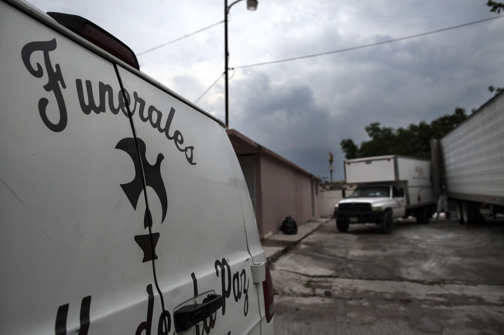 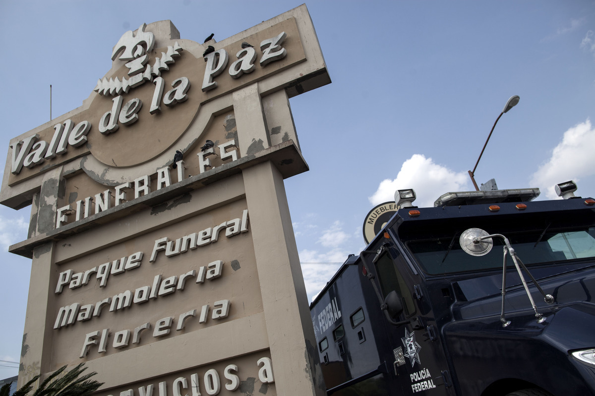
 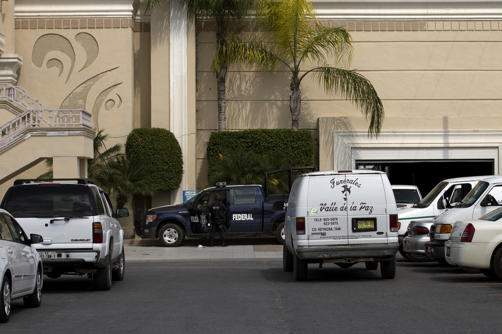
Guillermo Arias
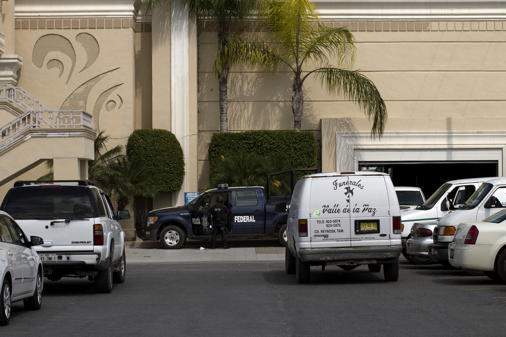
Guillermo Arias
Autopsias
{{read_file("_textos/cap2-autopsia.md")|markdown}} AQUI VA UNA IMAGEN DE UNA MORGUERepatriación de Hondureños
Translado terrestre a la Ciudad de México
 AP/Eduardo Verdugo
AP/Eduardo Verdugo
Nuevas Repatriaciones
2010
El Salvador
El 5 de septiembre de 2010, 11 cadáveres salieron hacia El Salvador. Se trata de los cuerpos de: José Ángel Flores Bolaños, José Gilberto Flores García, Armando Pérez Nieto, Sabás Napoleón López Sánchez, José Francisco García Hernández, Adolfo Armando Fraile Vega, Henri Francisco Serrano Cuéllar, Pedro Antonio Franco Peña, María Magdalena Alonso Rivera, Karen Yanneth Escobar Luna y Glenda Yaneira Medrano Solórzano. Mirna del Carmen Solórzano Medrano, madre de Glenda Yaneira, está segura que no enterró a su hija. Ella desobedeció las indicaciones del gobierno de su país y abrió el féretro que según contenía el cadáver de su hija: encontró un cuerpo lastimado, calcificado, que ella recuerda como “una momia blanca, sin pelo” y cuando le palparon los genitales, sintieron “un bulto”; sin embargo, pese a las dudas, procedió el ritual funerario por miedo a “haber desobedecido” a sus autoridades. 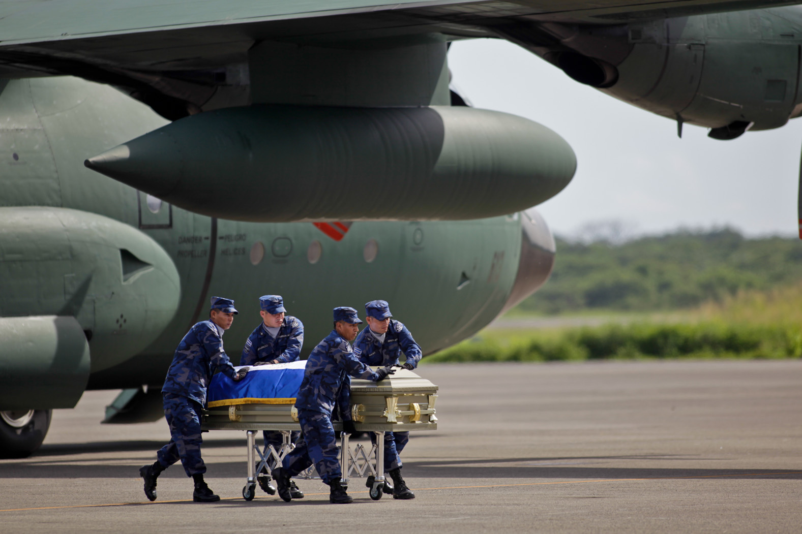
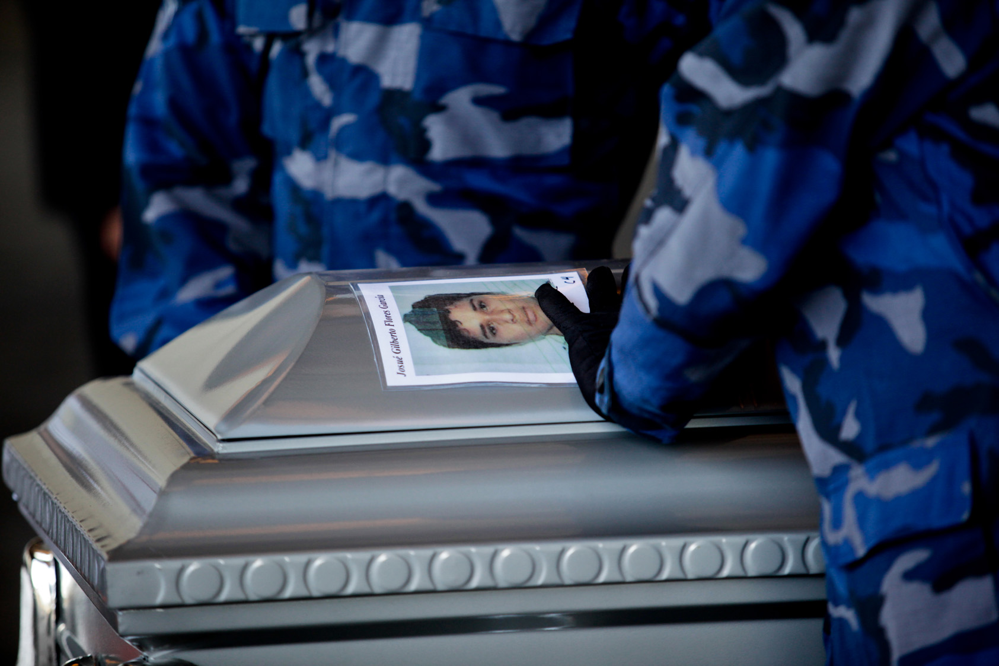
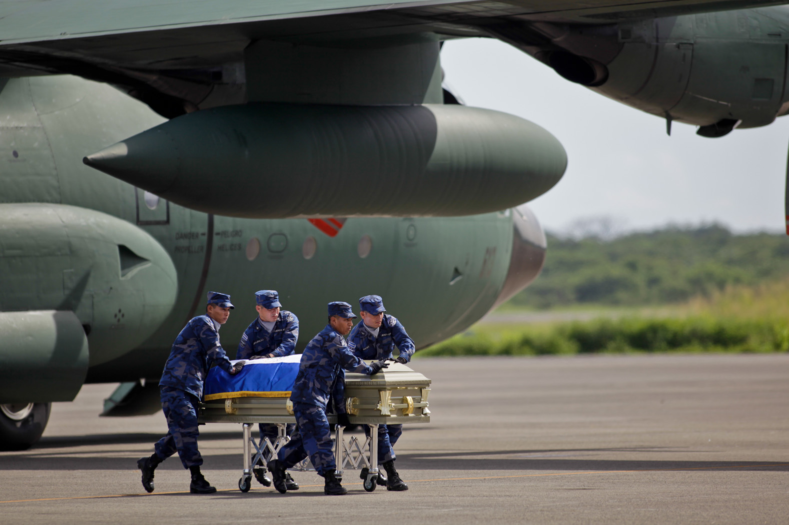
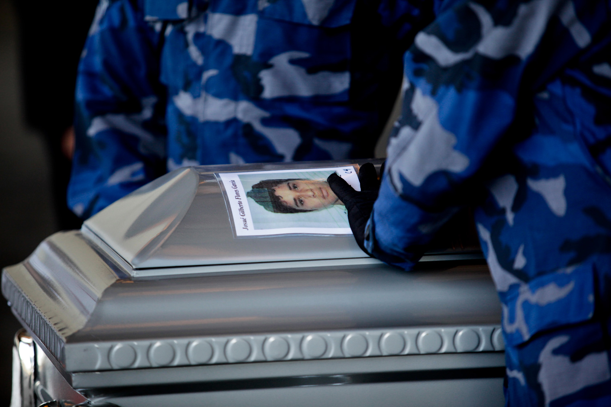

 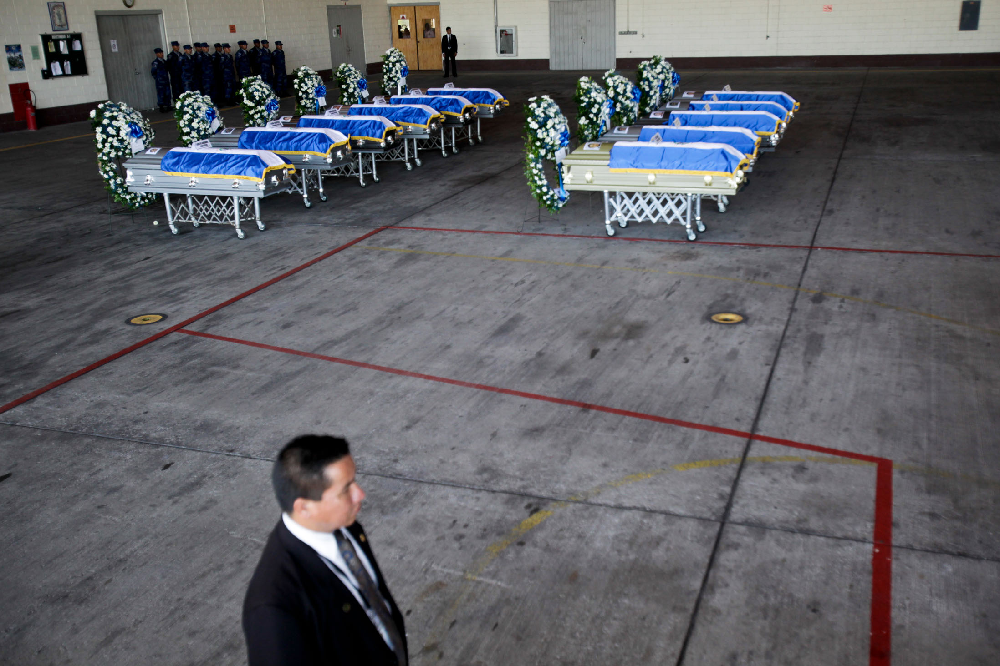
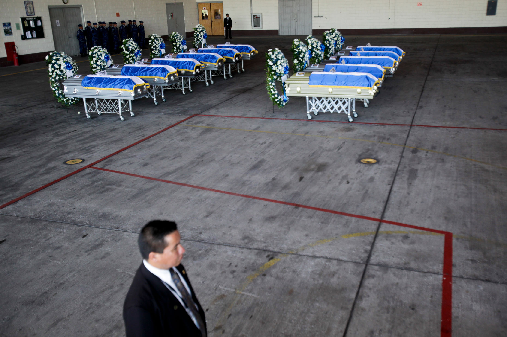
Guatemala
Un mes después de la masacre, el Gobierno de Guatemala mandó a México un avión comercial para repatriar a cinco de sus ciudadanos identificados: Gilmar Augusto Morales Castillo, Hermelindo Maquín Huertas Santos, Enrique Agustín Hernández, Byron Mauricio Berdúo Agustín y Gelder Lizardo Boche Cante. Los dos últimos, no obstante, no pudieron salir de México porque el Gobierno de Tamaulipas no tenía lista su documentación. Según comunicó la Cancillería de Guatemala, la operación ocurrió el 24 de septiembre de 2010. el 23 de diciembre, a Guatemala, Telmo Leónidas Yupa Chimborazo La recomendación de la CNDH da datos contradictorios a los de los propios países. Por ejemplo, afirma que esa repatriación ocurrió el 21, fecha que se confunde probablemente con la de su identificación. Las fechas en las que afirma que los cuerpos fueron “identificados” y “repatriados” son sistemáticamente anteriores a las facilitadas por los distintos consulados como días de la repatriación. Solo coincide la del salvadoreño Francisco Antonio Blanco Cueva, de 31 años, el 29 de septiembre de 2010. Octubre y noviembre de ese año fueron los meses en los que más cuerpos fueron repatriados. 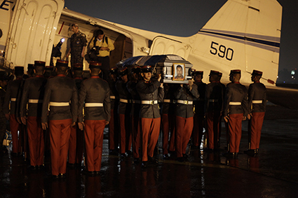 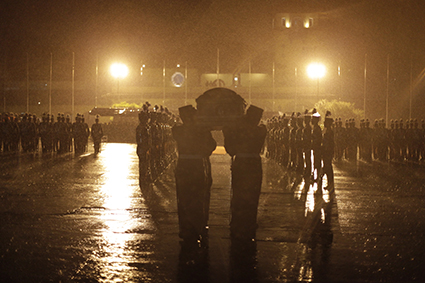 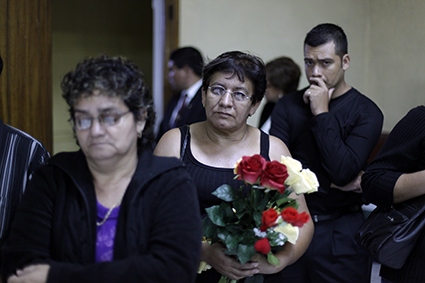 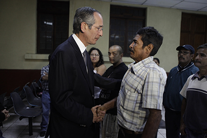Honduras
La Comisión sitúa las siguientes devoluciones a Honduras: dos cuerpos el 23, un cuerpo el 25 y dos cuerpos el 28 de septiembre, pero el único vuelo con restos repatriados registrado por las autoridades de ese país salió el 5 de noviembre. En lugar de los cinco féretros contabilizados por la CNDH, Honduras reporta ocho: Eredis Ayala Muñoz (cuyo cuerpo había sido confundido en la repatriación del 1 de septiembre con el de un ciudadano brasileño), Carlos Alejandro Espinoza (bajo este nombre viajó en esa primera repatriación el cuerpo de Misael Castro Bardales), Vicente Medina Lozano, Alfredo Crisóstomo García, José Francisco Velásquez Lozano, Eris Raúl Hernández Lemus, Tomasa Maritza Archaga Jacome y José Yovani Hernández González. Ese mismo día también fueron retornados a su país, Guatemala, los cadáveres de Byron Mauricio Berdúo Agustín, Gelder Lizardo Boche Cante (ambos seguían en México por falta de documentación, pese a estar identificados desde el 21 de septiembre), Efraín Pineda Morales, su hijo Richard Pineda Lacán, su sobrina Mayra Cifuentes Pineda, José David Girón Martínez, Robin Estuardo Zúñiga Mijangos, Luis Humberto Álvarez Contreras.Brasil
Los brasileños Juliard Aires Fernandes, de 20 años, y Herminio Cardoso dos Santos, de 24, volaron a su país el 1 de octubre, según la prensa local (la CNDH marca el día 4), y el ecuatoriano Telmo Leónidas Yupa Chimborazo lo hizo el 23 del mismo mes, según el cónsul de su país en México (la CNDH especifica que fue también el día 4). El 1 de noviembre fue repatriada a Brasil Natane Amaral da Silva, según reportó la prensa brasileña.Ecuador
El 7 de diciembre, fue repatriada a Ecuador María Magdalena Tipantici Tubón.
A fecha del 19 de noviembre de 2010 –dos meses después de la masacre--, quedaban 18 cuerpos sin identificar, según informó el director del Servicio Médico Forense de Tribunal Superior de Justicia del Distrito Federal.
2011
Ecuador
Hasta 2011 se consiguieron identificar los cadáveres del ecuatoriano Cristian Andrés Cahuana Campos, repatriado el 10 de febrero, según la CNDH (el 11, según el cónsul de su país en México)Guatemala
El 23 de marzo, cuatro meses y medio después de que su padre, su hermano y su prima, con los que había emprendido el camino a EU, llegaran también muertos a su aldea, llegó Nancy Pineda a Lacan, Sipacate, en la región de Escuintla. La tardanza es inexplicable.India
Tres semanas después, el 12 de abril, los 14 cuerpos restantes salieron del Semefo dependiente del Tribunal Superior de Justicia del Distrito Federal y fueron enviados al Instituto de Medicina Forense del Estado de México. Uno de los cadáveres, correspondiente a un ciudadano proveniente de India, Ankitkumar Bharatbai Patel, fue identificado y repatriado el 8 de junio de 2011 (fuentes del consulado apuntan a que fue en julio), aunque su familia tiene dudas sobre su identidad, pues el cuerpo no llevaba los anillos con los que partió el migrante y tenía unos tatuajes que les resultaban desconocidos. ¿FUE INCINERADO?A la Fosa Común
El 22 de julio del 2011, los 13 cadáveres restantes fueron enterrados en la fosa común del panteón Dolores, cementerio principal de la Ciudad de México, donde el encargado de enterrar a los muertos que nadie reclama, los dejó en un lugar apartado en la sección de cadáveres anónimos. El hombre informó que las bolsas blancas en las que fueron enterrados ‘los cocieron’ por dentro y aceleraron el proceso de descomposición. En abril de ese año ocurrió el hallazgo de nuevas fosas, también en san Fernando, en las que muchas de lad víctimas también eran migrantes, de donde se rescataron 189 cuerpos aunque siempre se afirmó que había cientos más.2012
Ecuador
El 20 de enero de 2012, el cuerpo de Rosa Amelia Panza Quilli fue exhumado, incinerado y repatriado a Gualalcay, en la provincia de Azuay, en Ecuador.
El 30 noviembre del 2012, el último día de la administración de Felipe Calderón, peritos de la PGR acudieron al panteón Dolores, sacaron 10 cuerpo de las víctimas (1 de esa masacre y 9 de las fosas encontradas en San Fernando en abril de 2011), los calcinaron, disminuyendo a polvo las evidencias del crimen y de la identidad de los cuerpos. Otra vez, las razones fueron sanitarias. A la fecha, de las 72 víctimas de San Fernando, hay 12 cadáveres de migrantes que permanecen sin identificar. Actualmente, gracias a un convenio forense, la PGR permitió la coadyuvancia del Equipo Argentino de Antropología forense que trata de devolver la identidad a los restos de la masacre de los 72 y de las fosas de San Fernando.